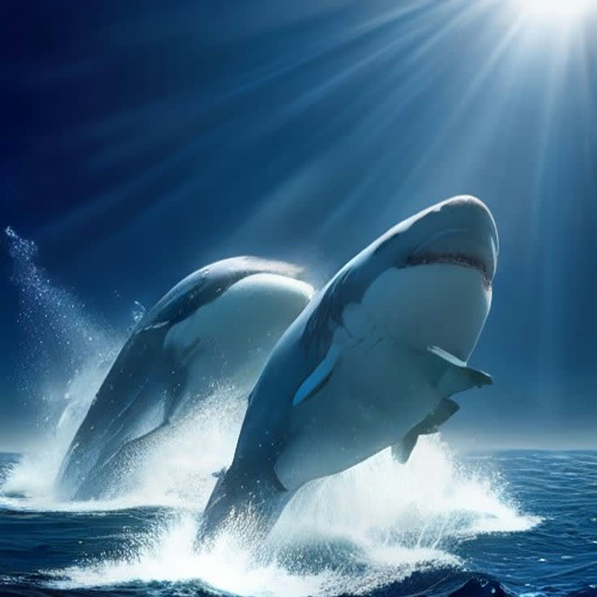
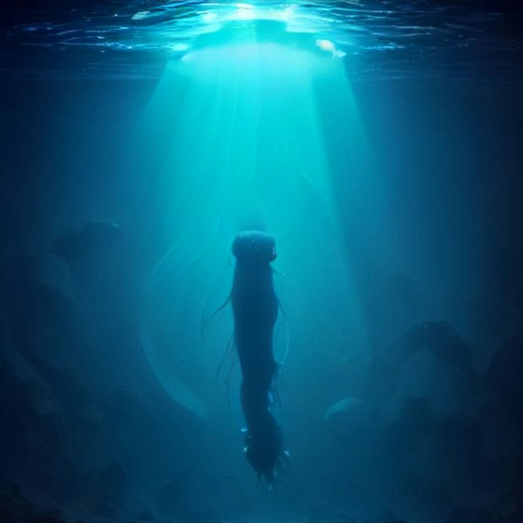
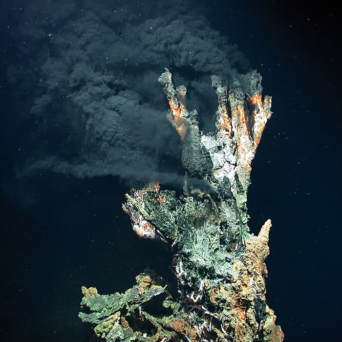
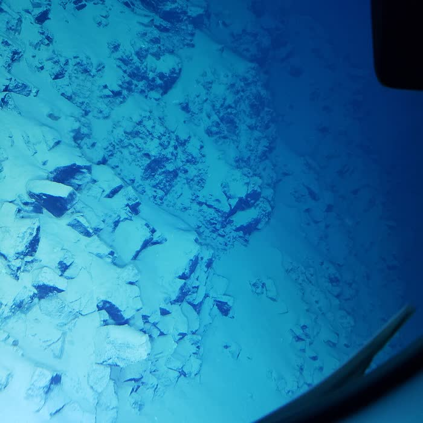
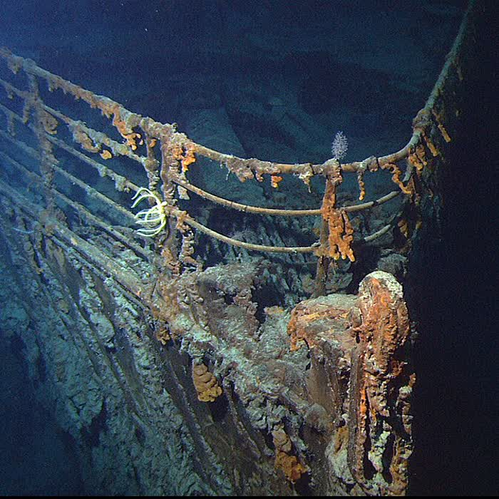
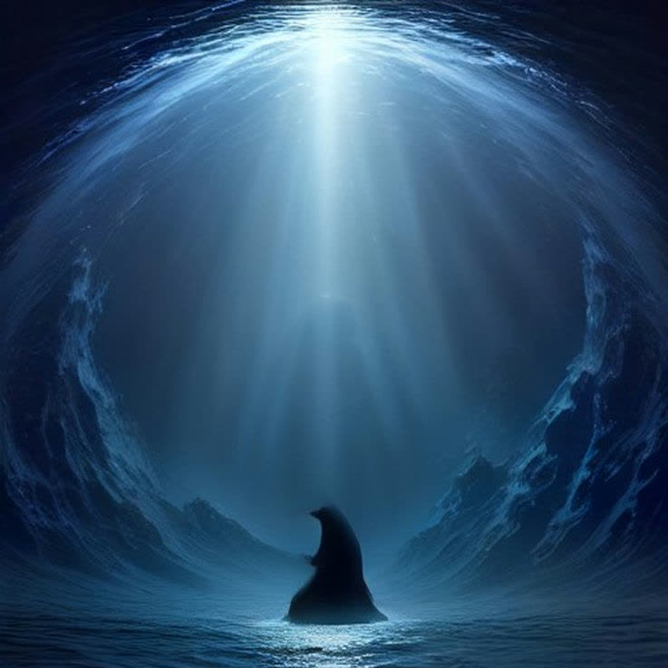

CAMADA 1 · SUPERFÍCIE
Tartarugas
Tubarões
Baleias
Golfinhos
Corais
Polvos
CAMADA 2 · ZONA DO CREPÚSCULO
Luz desaparece
Peixe-machado
Bioluminescência
Águas-vivas
Peixe-lanterna
CAMADA 3 · LENDAS VIVAS
Filmada em 2012
Peixe-remo
Lula-gigante
Kraken
Lula-colossal
CAMADA 4 · SEM LUZ DO SOL
1977
Vida sem sol
Fontes hidrotermais
Fumarolas negras
Vermes-tubulares
CAMADA 5 · O ABISMO
Challenger Deep
Fossa das Marianas
~11.000 m
Pressão esmagadora
Titanic (3.800 m)
CAMADA ??? · O DESCONHECIDO
???
Ainda não descoberto
ICEBERG DOS
MISTÉRIOS DO OCEANO
70%do planeta é oceano
+80%do fundo sem mapa detalhado

Tubarões e baleias

Criaturas bioluminescentes

Fontes hidrotermais

Fossa das Marianas

Titanic · ~3.800 m

O que ainda não vimos
2012 · filmada viva no Japão
descobertas em 1977
vida sem luz solar
≈ 11.000 metros
pressão esmagadora
repousa a ~3.800 m
PROFUNDIDADE: 0 m
INSCREVA-SE
Qual camada te assustou mais? Comente!